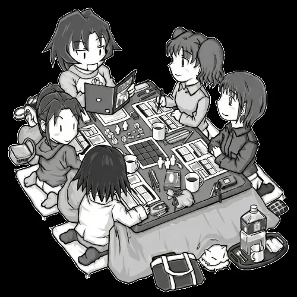
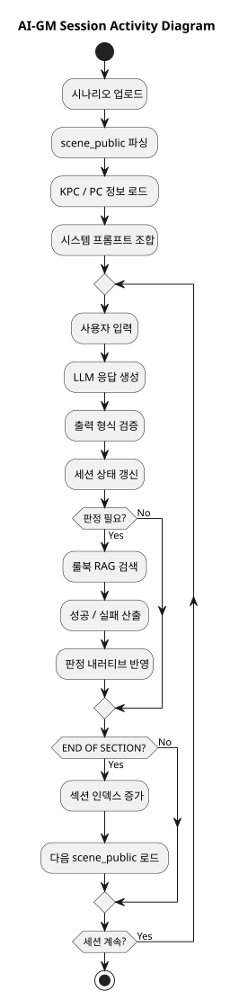
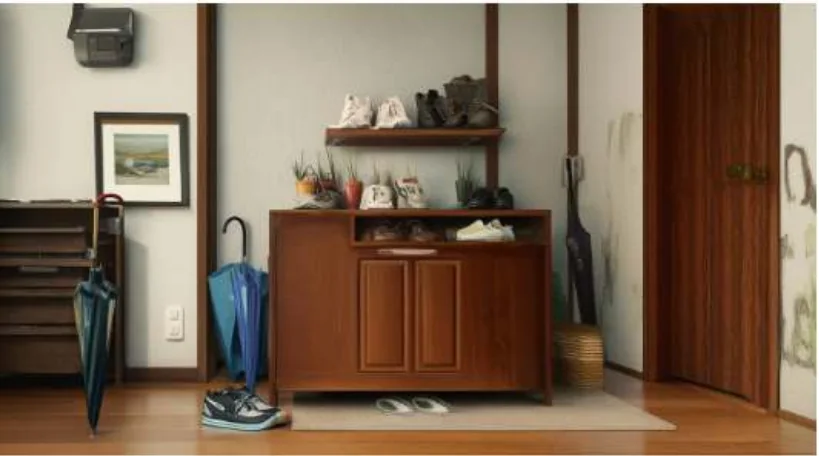
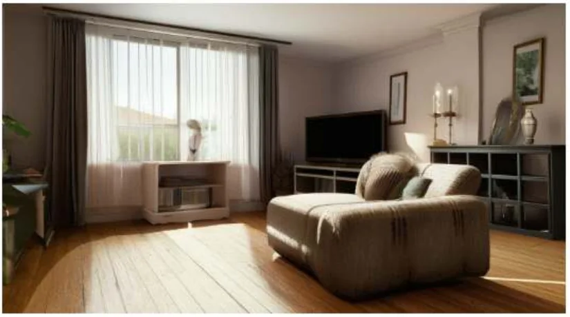
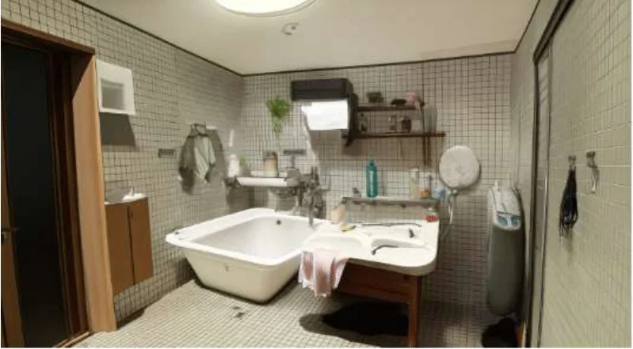
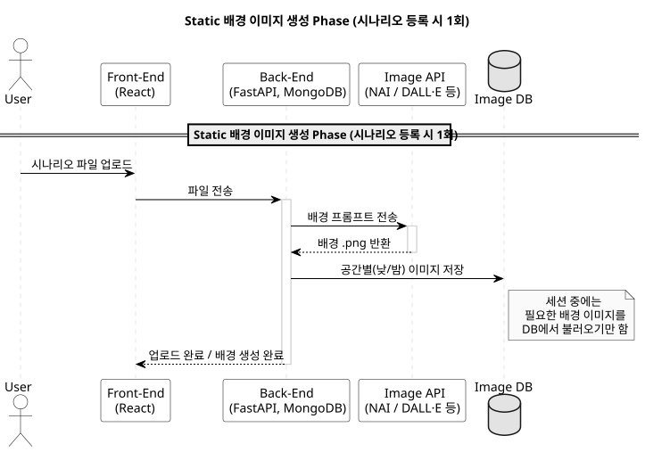
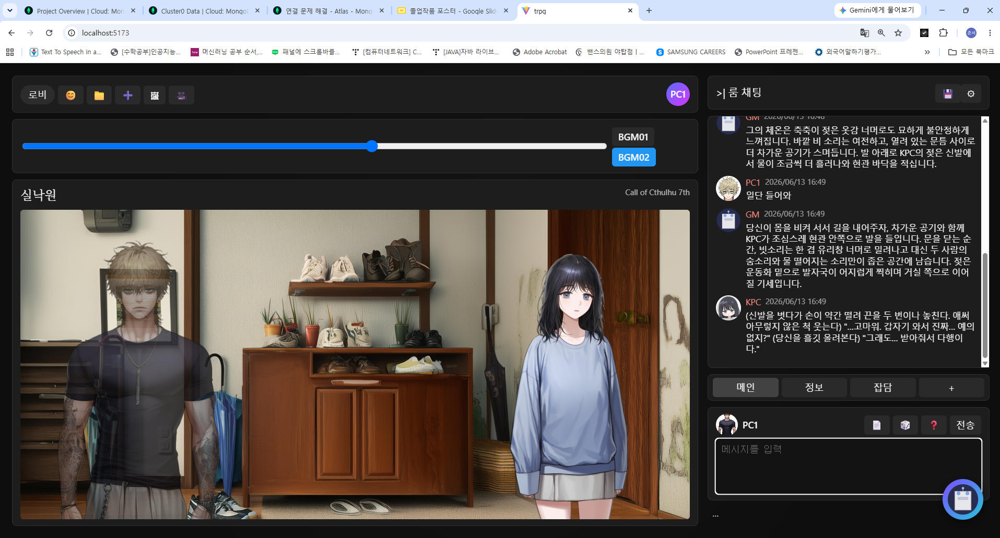
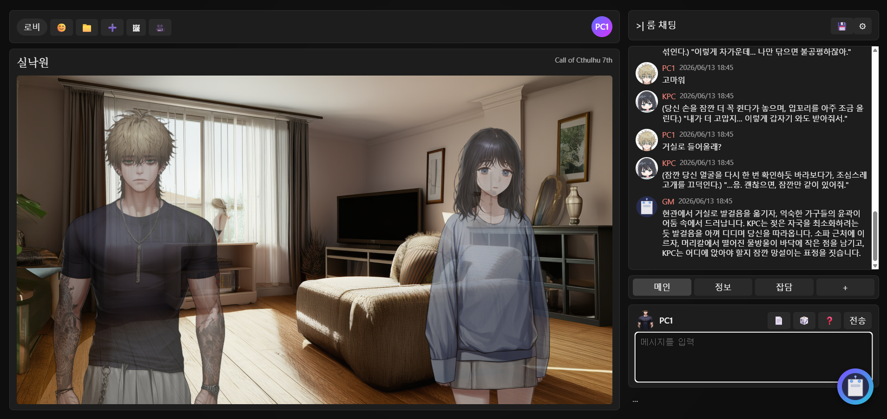
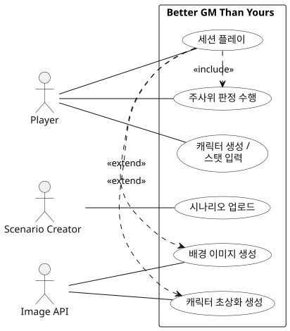
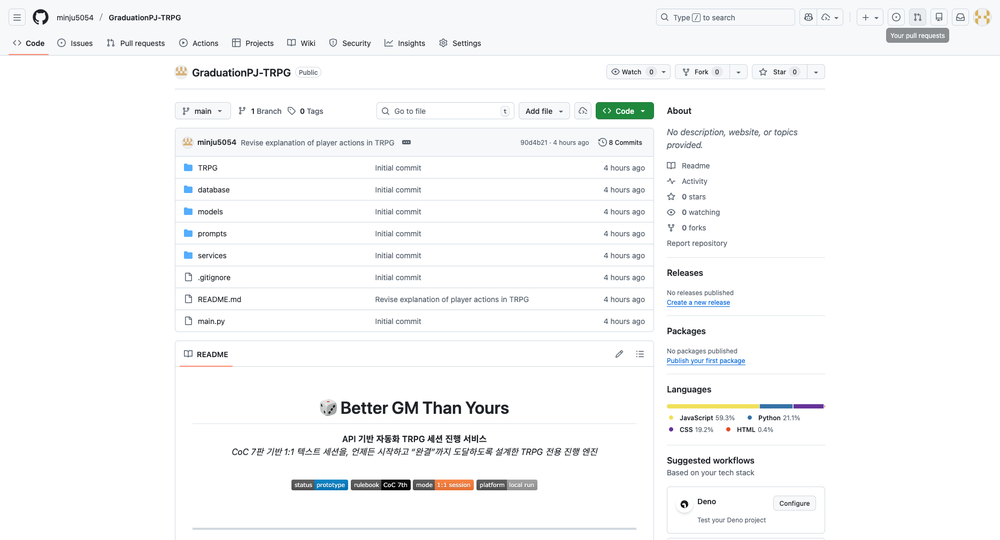

Better GM
Than Yours
너보다 세션 잘하는 GM 찾았어
AI가 GM과 KPC를 동시에 수행하는 TRPG 세션 자동화 플랫폼. 본 보고서는 발표자료 PPTX의 흐름을 기본으로, 과제계획서·창업플랜·지도보고서의 내용을 통합해 프로젝트 배경, 구현, 결과물, 창업 플랜, 멘토링 피드백과 분석/설계 산출물을 정리한다.
보고서 요약
Better GM Than Yours는 LLM을 단순 대화 상대가 아니라 TRPG 세션을 진행하는 게임 엔진으로 설계한 프로젝트다. 핵심 구현은 룰북 RAG, 시나리오 진행, 스탯 기반 판정, KPC 반응 생성을 결합해 한 세션이 처음부터 끝까지 이어지는 구조를 만드는 데 있다. 이후 텍스트 중심 세션의 몰입감을 강화하기 위해 장면 배경 이미지와 캐릭터 초상화를 결합해 텍스트와 이미지가 함께 진행되는 AI-GM 플랫폼으로 확장했다.
핵심 문제
GM 부족, 일정 조율 부담, 판정 계산과 서사 진행 피로.
세션 엔진
AI-GM이 룰, 판정, 서사, KPC 반응을 통합 수행.
시각화 레이어
시나리오 배경 이미지와 캐릭터 초상화로 텍스트 세션의 몰입감 강화.
서비스 확장
팬메이드 시나리오, 다중 룰북, 스토어 생태계로 확장 가능.
What is
TRPG?
TRPG(Tabletop Role-Playing Game)는 GM이 세계와 사건을 진행하고, 플레이어가 캐릭터에 이입해 선택과 판정을 통해 이야기를 만들어가는 게임이다. 이 프로젝트는 이 구조에서 가장 부담이 큰 GM 역할을 LLM 기반 시스템으로 자동화하는 데 초점을 둔다.

GM · 수호자
세계관과 장면을 묘사하고, NPC를 연기하며, 플레이어 행동에 맞춰 사건을 진행한다. 본 프로젝트에서 AI가 대체하려는 핵심 역할이다.
Player
자신의 캐릭터 관점에서 행동을 선언하고, GM의 서술과 판정 결과에 반응하며 세션의 방향을 만든다.
Dice
행동의 성공·실패를 결정하는 무작위 판정 장치다. CoC에서는 스탯 기준으로 Regular, Hard, Extreme Success 등을 판정한다.
Character
플레이어와 KPC의 능력치, 성격, 관계, 외형 정보를 포함한다. 본 시스템에서는 persona.json과 stat 정보가 세션 생성에 사용된다.
Rulebook
세계와 판정의 기준이 되는 규칙 집합이다. 본 프로젝트는 룰북 조항을 RAG로 검색해 판정 근거로 사용한다.
왜 AI-GM이 필요한가
TRPG는 서사 몰입도가 높은 장르지만, 실제 플레이까지 도달하기 위해서는 GM 섭외, 일정 조율, 룰 이해, 진행 역량이라는 장벽을 넘어야 한다.
플레이보다
준비가 먼저 지친다
본 프로젝트는 TRPG의 재미를 대체하는 것이 아니라, 세션을 시작하기 전후에 발생하는 운영 부담을 AI-GM 시스템으로 줄이는 데 초점을 둔다.
GM 섭외 난이도
세션을 이끌 GM은 룰 이해, 진행 경험, 즉흥 대응 능력, 준비 시간을 모두 요구받는다.
일정 조율 비용
1회 세션에도 긴 플레이 시간이 필요하고, 참여자 전원의 시간을 맞추는 과정이 부담이 된다.
진행자의 피로
GM은 서사 묘사, KPC 연기, 판정 계산, 장면 전환을 동시에 처리해야 한다.
일반 AI의 한계
일반 챗봇은 대화는 가능하지만 룰 기반 판정, 장기 상태 관리, 세션 완결 구조가 약하다.
AI를 대화 상대가 아니라
세션 엔진으로 재정의
Better GM Than Yours는 GM 자동화, KPC 인격, 룰북 RAG, 판정 흐름, 출력 형식 제어를 하나의 세션 루프 안에 묶는다. 목표는 “그럴듯한 대화”가 아니라 “룰을 지키며 완결되는 플레이”다.
AI-GM
LLM이 GM과 KPC 역할을 동시에 수행해 사람 GM 없이 세션을 진행한다.
룰 준수
CoC 7판 룰북 기반 RAG와 판정 흐름으로 게임성을 유지한다.
온디맨드
일정 조율 없이 언제든 시작하고, 세션 종료 조건까지 관리한다.
팬메이드 지원
사용자 시나리오 업로드를 전제로 TRPG 커뮤니티 문화를 반영한다.
기존 서비스와의 차이
기존 서비스들은 대화 몰입감, 이미지 생성, 세션 보조 도구라는 장점이 있지만, 룰 기반 AI-GM이 팬메이드 시나리오를 완결형 세션으로 진행한다는 목표와는 차이가 있다.
Why AI?
Reduced Session Duration
No Space-Time Constraints
Personalized Storytelling
No ups and downs for GM
AI는 단순히 GM을 대체하는 도구가 아니라, 세션 길이와 참여자 조율을 줄이고, 사용자의 선택과 캐릭터 설정에 맞는 개인화된 서사를 안정적으로 제공하는 기반이 될 수 있다.
AI-GM 세션 엔진 구현
Better GM Than Yours의 핵심은 사용자의 입력에 단순히 답변하는 챗봇이 아니라, 룰북·시나리오·캐릭터 데이터·판정 결과를 함께 관리하며 장면 단위로 세션을 진행하는 AI-GM 엔진이다.
대화가 아니라
실행 루프
사용자 행동을 입력받고, 현재 장면과 캐릭터 상태를 재구성한 뒤, 룰북 검색과 판정을 거쳐 GM 서술과 KPC 반응을 생성한다.
현재 장면 맥락 구성
scene_public, 사용자 입력, 이전 대화 로그, 캐릭터 상태를 현재 턴의 컨텍스트로 묶는다.
룰북·시나리오·캐릭터 검색
필요한 경우 RAG로 룰 조항과 시나리오 정보를 검색해 프롬프트에 주입한다.
판정과 서사 생성
스탯과 주사위 결과를 바탕으로 성공·실패를 계산하고, 결과를 내러티브로 변환한다.
상태 갱신과 다음 턴 연결
출력된 GM/KPC 응답과 진행도를 저장하고, 섹션 종료 여부에 따라 다음 장면으로 이동한다.
TRPG 세션을 굴리는
세 가지 기술 코어
프로젝트의 기술 설명은 세션 동작 관점에서 정리하는 것이 가장 명확하다. Better GM Than Yours의 핵심은 Gameplay, RAG, Prompt Engineering이 서로 맞물려 GM의 역할을 분해하고 자동화한다는 점이다.
아키텍처 구조
Better GM Than Yours는 시나리오, 캐릭터, 룰북 데이터를 AI-GM 엔진에 연결하고, 세션 진행 결과를 텍스트·판정·이미지 UI로 출력하는 구조로 설계되었다. 핵심은 LLM을 단순 대화 모델이 아니라 TRPG 세션을 진행하는 오케스트레이터로 사용하는 것이다.
Input Data
AI-GM Orchestrator
Session UI
Stat-Based
Random Resolution
TRPG의 게임성은 플레이어의 선택이 룰과 판정을 통해 결과로 변환되는 데 있다. 본 프로젝트는 캐릭터별 고유 스탯을 기반으로 판정을 수행하고, 결과를 서사로 다시 변환한다.
Failure
주사위 결과가 기준치를 초과하면 실패로 판단하고, 실패 서사를 생성한다.
Regular Success
result 이하의 결과를 일반 성공으로 처리한다.
Hard Success
result/2 이하일 때 더 강한 성공으로 처리한다.
Extreme Success
result/5 이하일 때 극단적 성공으로 처리한다.
일반 QA RAG가 아니라
TRPG 판정용 RAG
본 프로젝트의 RAG는 질문에 대한 설명을 생성하는 구조가 아니라, 플레이어 행동과 세션 상태를 기준으로 룰북 조항을 검색하고 판정 근거로 사용하는 구조다.

질문에 답하는 RAG
- Query
- 사용자의 자연어 질문
- Knowledge
- 문서, 위키, 일반 지식 베이스
- Output
- 검색 근거를 반영한 답변 텍스트
- Flow
- Retrieve → Generate
판정을 수행하는 RAG
- Query
- 판정 의도가 포함된 플레이어 행동 서술
- Knowledge
- CoC 7판 룰북 조항, 판정 기준, 캐릭터 스탯
- Output
- 성공·실패 판단과 그에 따른 GM 내러티브
- Flow
- Retrieve → Apply Rules → Judge → Narrative
system_prompt는
세션 운영 매뉴얼이다
스토리텔링은 자유 생성이 아니라 조립형 시스템 프롬프트로 통제된다. 각 블록은 캐릭터 구현, 세션 규칙, GM 비밀 정보, 공개 시나리오, 출력 형식을 나누어 담당한다.
KPC는 고정된 대사가 아니라
성격 모델로 반응한다
persona.json은 KPC의 기본 정보와 외형, Big Five 성격 수치, PC와의 관계축, 신념과 세계관을 구조화한다. 이를 kpc_block으로 변환해 세션 중 일관된 캐릭터 반응을 생성한다.
basic / appearance
이름, 나이, 외형, 말투, 기본 인상.
big5
Openness, Conscientiousness, Extraversion, Agreeableness, Neuroticism.
relationshipToPC
갈등, 욕구, 두려움, 역할, 관계 축.
belief
인물의 신념, 세계관, 상황 해석 방식.
해결된 4가지 오작동
LLM 기반 세션 진행에서 중요한 것은 모델이 “잘 말하는 것”보다 정해진 역할, 판정 흐름, 출력 형식을 이탈하지 않도록 제어하는 것이다.
scene_public 전체 출력
모델이 시나리오 텍스트를 즉시 출력할 대본처럼 해석했다.
start_scene 섹션 입구와 한 턴 진행 규칙을 강화해 자동 전개를 제한했다.
출력 형식·라벨 흔들림
GM/KPC 발화가 섞이고 라벨 누락으로 UI 처리가 불안정했다.
PROGRESS / GM / KPC 3단 출력 구조를 고정하고 형식 위반을 오류로 처리했다.
판정 유도 누락
대화 중심 장면에서 판정이 필요한 행동을 감지하지 못했다.
판정 규칙을 프롬프트 상단으로 올리고 성공·실패 사전 서술을 금지했다.
섹션 종료 실패
“충분히 진행되면 종료”라는 정성 기준 때문에 세션이 늘어졌다.
scene_public 문장 수와 필수 사건 기준으로 진행도를 정량화했다.
시스템 프롬프트 구조
AI-GM은 캐릭터 구현 정보, 세션 규칙, 시나리오 비밀 정보, 공개 장면 스크립트, 출력 포맷 규칙을 하나의 시스템 프롬프트로 조합해 현재 장면에 맞는 응답을 생성한다.
def construct_prompt(section_id):
string = f"scene_public{section_id}.txt"
scene_public = load_file(string)
final_prompt = f"""
{kpc_block}
{trpg_rules}
[시나리오 비밀 정보 - GM 전용]
{scenario_secret}
[시나리오 전체 장면 목록 - 참고만, 즉시 출력 금지]
{scene_public}
{formatting_guide}
""".strip()
return final_promptKPC의 성격, 말투, 관계, 행동 기준을 주입해 캐릭터 연기의 일관성을 유지한다.
TRPG 진행 규칙과 판정 기준을 제공해 AI-GM의 응답을 룰 기반으로 제어한다.
GM만 알아야 하는 비밀 정보를 포함하되, 플레이어에게 즉시 노출되지 않도록 한다.
현재 장면에서 공개 가능한 배경과 사건 정보를 불러와 장면 묘사의 기준으로 사용한다.
응답 형식과 출력 순서를 고정해 세션 UI에 안정적으로 연결한다.
프롬프트 제어 전략
Constraint Grounding
TRPG 규칙을 프롬프트 상단에 배치하고 start_scene 마커와 한 턴 진행 규칙으로 과도한 자동 전개를 막는다.
Context Packing
중간 컨텍스트 손실을 줄이기 위해 앞부분에는 역할·흐름 규칙, 중간에는 scene_public, 뒤쪽에는 scenario_secret과 예외 규칙을 배치한다.
Self-Check / Instruction Clarity
출력 전 역할 일관성, 비밀 누설, 장면 흐름, 형식 위반 여부를 점검하게 하여 예측 가능한 출력을 유도한다.
Decomposition / Scaffolding
GM → KPC → User → Check → User → GM의 순환 구조로 복합 과업을 단계별로 분해한다.
AI-GM Session Activity Diagram
세션은 초기화, 프롬프트 조합, 메인 진행 루프, 판정 처리, 섹션 전환으로 구성된다. 핵심은 자유 대화가 아니라 상태 변화와 조건 분기를 가진 activity flow를 반복 실행하는 구조라는 점이다.

구현 결과 요약
구현 결과는 크게 AI-GM 세션 엔진과 시각화 레이어로 구성된다. 세션 엔진은 시나리오 진행, 룰 기반 판정, KPC 반응, 프롬프트 안정화를 담당하고, 시각화 레이어는 장면 배경과 캐릭터 초상화를 통해 텍스트 중심 세션의 몰입감을 강화한다.
세션 완결 구조
시나리오 섹션 단위 진행, 진행도 계산, END OF SECTION 감지, 엔딩 내러티브 생성.
룰 기반 판정
/dice 흐름, dicejudgement(), CoC 룰북 RAG, 판정 결과 내러티브 생성.
캐릭터 반응
persona.json과 Big Five 기반 KPC 인격 블록으로 대화 일관성 강화.
프롬프트 안정화
자동 전개, 형식 붕괴, 판정 누락, 섹션 종료 실패를 문제-원인-해결 방식으로 개선.
이미지 모듈
Static 배경 이미지 생성, 인물 초상화 생성, [장소: X] 태그 기반 배경 동적 교체.
서비스화 기반
팬메이드 시나리오, 수익 모델, 룰 확장, UGC 스토어 방향까지 사업화 계획 수립.
텍스트 세션에서
시각화된 세션 경험으로
AI-GM이 생성한 서사는 텍스트 출력에 그치지 않고, 시나리오 배경 이미지와 캐릭터 비주얼로 연결된다. 장면의 공간 정보와 KPC 외형 정보를 이미지 생성 파이프라인과 연결해 세션 진행 상황을 시각적으로 함께 전달한다.
Static 배경
시나리오 등록 시 공간별 PNG를 사전 생성하고, GM의 [장소: X] 태그에 맞춰 세션 중 동적으로 교체.
인물 초상화
persona.json 기반 appearance.json을 만들고 고정 seed로 캐릭터 초상화 생성 후 DB 저장.
장면별 배경 이미지 생성
실시간 생성이 아니라 시나리오 등록 시 주요 공간을 미리 렌더링해 DB에 저장하고, 세션 중 필요한 시점에 불러오는 구조다. 비주얼 노벨처럼 인물 없는 배경에 투명 캐릭터 스탠드를 합성하는 방식으로 확장할 수 있다.



| Model | NovelAI / NAI |
| Sampling | Euler Ancestral |
| Steps | 23 |
| Guidance | 5 |
| Seed | 1000 고정 |
| Prompt Strategy | realistic style, highly detailed, not luxury로 일반 가정집 톤 통일 |

배경 전환 태그 설계 &
백엔드 서빙 연동
정적으로 생성된 배경 이미지를 실제 세션에서 사용하기 위해, GM 응답에 장소 신호를 삽입하고 프론트가 이를 읽어 배경을 교체하는 구조를 설계했다.
GM 응답 끝에 장소 태그를 남긴다
prompts/trpg_rules.txt에 배경 전환 규칙을 추가해,
GM이 현재 장면의 장소를 런타임에 명시하도록 했다.
태그를 파싱해 이미지 URL로 바꾼다
백엔드는 생성된 배경·캐릭터 이미지를 정적 자산처럼 서빙하고, 프론트는 GM 응답의 장소 태그를 읽어 배경 state를 갱신한다.
generated_assets/backgrounds
장소 배경 이미지 저장
GET /background/{location}
장소명에 맞는 배경 반환
GET /character/{role}
PC/KPC 초상화 반환
applyLocationBackground(text)
GM 응답에서 장소 태그 파싱
캐릭터 초상화 생성
인물 초상화는 세션 생성 시 KPC 인적 사항과 persona.json을 바탕으로 appearance.json을 생성하고, 이미지 API에 전달해 고정 seed 초상화를 만든 뒤 DB에 저장한다.
텍스트와 이미지를 통합한 세션 출력 구조
최종 구조는 AI-GM 세션 루프와 이미지 생성 레이어가 분리된 기능이 아니라, 하나의 세션 출력 구조 안에서 함께 작동하도록 설계되었다. LLM과 RAG가 장면·판정·캐릭터 반응을 생성하면, Image API는 해당 장면과 캐릭터 상태를 시각 자료로 변환해 텍스트와 이미지가 결합된 세션 화면을 구성한다.
최종 구현 결과:
비주얼 노벨형 TRPG 세션 UI
최종 결과물은 AI-GM의 응답을 단순 채팅으로 출력하지 않고, 배경 이미지, 캐릭터 스탠딩 이미지, 초상화 기반 채팅 UI를 결합해 실제 비주얼 노벨처럼 세션이 진행되는 화면으로 구현되었다.


현재 장소를 배경으로 표시하고 PC/KPC를 스탠딩 이미지로 배치해 텍스트 세션을 장면 중심 화면으로 전환한다.
말하는 캐릭터는 앞으로 오고, 말하지 않는 캐릭터는 dim 처리해 대화의 주체를 직관적으로 보여준다.
오른쪽 채팅 로그에는 캐릭터 초상화 기반 프로필 이미지를 함께 출력해 GM·PC·KPC 발화를 시각적으로 구분한다.
배경·스탠딩·초상화를 분리된 레이어로 관리해 장면 전환과 캐릭터 연출을 독립적으로 처리할 수 있다.
분석·설계 산출물
최종 결과 보고서 요구사항에 맞추어 Use Case Diagram, Sequence Diagram, WBS를 보고서 내 산출물로 포함한다.
Use Case Diagram

Sequence Diagram — 세션 진행 및 판정
WBS — 작업 분해 구조
| 대분류 | 세부 작업 | 산출물 |
|---|---|---|
| 1. 기획 | TRPG 문제 정의, 기존 서비스 분석, 구현 범위 설정 | 프로젝트 구조, 기능 범위, 시나리오 조건 |
| 2. 세션 엔진 | 턴 기반 루프, scene_public 파싱, END OF SECTION 처리 | 세션 진행 로직 |
| 3. 판정 시스템 | /dice, dicejudgement(), RAG 검색, 판정 내러티브 | 룰 기반 판정 흐름 |
| 4. 인격 엔진 | persona.json, Big Five, 관계축, kpc_block 생성 | KPC 성격 반응 모듈 |
| 5. 프롬프트 안정화 | Constraint Grounding, Context Packing, Self-Check, Scaffolding | 오작동 개선 프롬프트 |
| 6. 이미지 모듈 | Static 배경, 인물 초상화, [장소: X] 태그 + 백엔드 서빙 | PNG 이미지 산출물 및 파이프라인 |
| 7. 사업화 | 시장 분석, BM, 로드맵, 저작권 대응 | 창업 플랜 |
창업 플랜
사업화 섹션은 창업플랜 보고서의 내용을 후반부에 통합한다. 본 프로젝트의 시장 포지션은 “세션 완결을 보장하는 룰 기반 AI-GM 플랫폼”이다.
1차 타겟
GM 구하기 어려운 경험이 있는 15-35세 TRPG 팬.
2차 타겟
텍스트 기반 스토리 게임을 즐기는 라이트 게이머.
3차 타겟
AI·창작 콘텐츠 소비에 익숙한 디지털 네이티브.
| 수익 모델 | 내용 | 의미 |
|---|---|---|
| 구독 기반 모델 | 무료 체험 / 월정액 프리미엄 / 무제한 플레이 / 기록 저장 | 반복 매출 구조, API 비용과 연동 |
| 콘텐츠 판매 | 프리미엄 시나리오, 장편 캠페인, 캐릭터 패키지 | UGC 마켓플레이스 확장 기반 |
| AI 기능 차등 과금 | 장기 기억, 감정 추적, 관계 변화 시뮬레이션 | AI 능력을 상품 가치로 전환 |
| 교육·창작 시장 | 시나리오 작가 도구, 게임 기획 교육, 심리 상담 시뮬레이션 | B2B·에듀테크 확장 가능성 |
사업 분석 요약
Better GM Than Yours는 TRPG 커뮤니티의 GM 부족 문제와 1인·비정기 플레이 수요를 기반으로, 룰 기반 AI-GM 플랫폼이라는 포지션을 가진다.
Customer
온라인 TRPG 커뮤니티, 스토리 게임 유저, AI 창작 콘텐츠 소비자
Competitor
GPTRPG, ZETA, Character.AI, Roll20, CCFOLIA
Company
CoC 7판 RAG 판정 엔진, KPC 인격 엔진, 프롬프트 안정화 노하우
Segmentation
코어 TRPG 팬, 스토리 게임 라이트 유저, AI 창작 콘텐츠 소비자
Targeting
15-30세 온라인 TRPG 커뮤니티
Positioning
세션 완결을 보장하는 룰 기반 AI-GM 플랫폼
Strengths
- TRPG 세션 진행에 특화된 AI-GM 구조
- 룰북 RAG, 캐릭터 데이터, 시나리오 정보를 통합한 세션 생성 방식
- GM 부족과 일정 조율 부담을 줄이는 명확한 문제 해결성
- 시나리오 배경 이미지 UI를 통한 몰입감 강화
Weaknesses
- 초기 구현 범위가 CoC 7판과 특정 시나리오에 집중됨
- 장기 세션에서 컨텍스트 유지와 규칙 일관성 검증 필요
- LLM 응답 품질이 모델 성능과 프롬프트 설계에 의존함
- 이미지 생성 결과의 안정성과 비용 관리가 추가 과제로 남음
Opportunities
- TRPG 입문자, 1인 플레이어, 비정기 플레이어 대상 수요 존재
- 팬메이드 시나리오 업로드와 마켓플레이스 확장 가능성
- D&D, 인세인 등 다중 룰북으로 확장 가능한 구조
- 스트리밍, 커뮤니티, IP 협업과 연결 가능한 콘텐츠형 서비스
Threats
- ChatGPT, Character.AI 등 범용 AI 대화 서비스와의 기능 중복 인식
- 룰북과 팬메이드 시나리오 사용에 따른 저작권·라이선스 이슈
- TRPG 시장 자체가 니치하여 초기 유저 확보 전략이 중요함
- AI 생성 결과의 예측 불가능성이 세션 몰입을 해칠 가능성
단계별 사업화 로드맵
Better GM Than Yours는 CoC 7판 기반 세션 안정화에서 출발해, 유료화 모델과 다중 룰북 확장을 거쳐 시나리오 마켓플레이스와 글로벌 TRPG 시장으로 확장하는 단계적 사업화 전략을 가진다.
CoC 7판 세션 완결성, 오픈 베타, 초기 유저 확보, 팬메이드 업로드 기능을 안정화한다.
프리미엄 구독 모델을 도입하고 D&D 5e 등 룰북 1-2종, 멀티플레이, 이미지·배경음악 기능을 추가한다.
시나리오 마켓플레이스, 일본·영어권 TRPG 시장 진출, IP 협업 및 스트리밍 연계를 추진한다.
멘토링 내용과 반영 계획
카카오 정재웅 멘토는 프로젝트가 단순 챗봇이 아니라 판정 시스템, 룰북 기반 RAG, 캐릭터 성격 모델을 포함한 실제 세션 진행 시스템으로 설계되었다는 점을 긍정적으로 평가했다. 동시에 서비스화를 위해서는 GM 자동화의 안정성, 장기 컨텍스트 유지, 검증 체계가 중요하다고 피드백했다.
이미지·표정 기능도 의미 있지만, 핵심 가치는 GM 자동화의 안정성과 세션 완결성에 있다.
향후 개발 우선순위를 GM 진행 정확도와 룰 기반 세션 완결성으로 재정렬한다.
최신 대화 몇 개만 입력하는 방식은 장기 세션에서 맥락 손실을 만들 수 있다.
전체 로그의 주기적 요약, 최신 데이터 가중치, 상태 메모리 구조를 도입한다.
일반 unittest와 달리 룰 준수, 판정 일관성, secret leakage 등 별도 평가 기준이 필요하다.
룰 준수율, 판정 일관성, 섹션 종료 성공률, 비밀 정보 노출 여부를 평가 지표로 설계한다.
다중 룰북과 시나리오 공유 구조는 서비스 확장성과 커뮤니티 생태계의 핵심이다.
D&D 5e 등 추가 룰 실험과 시나리오 공유·판매 마켓플레이스를 검토한다.
한계와 향후 계획
현재 구현은 단일 룰북과 1인 플레이 중심으로 안정화되어 있다. 다음 단계에서는 장기 세션, 다중 룰북, 멀티플레이, 저작권 리스크 관리까지 확장해야 한다.
현재 한계
향후 개선
저작권 대응
초기에는 한국어문학과 P실무와 협업해 비선형 스토리 기반 게임 시나리오를 직접 제작하는 방향도 고려했으나, 실험 범위와 구현 우선순위를 고려해 기존 공개 시나리오를 연구·실험용 입력 데이터로 활용하는 방향을 택했다.
현재 사용 방식
웹에 개인 사용 전제로 공개된 기존 시나리오를 참고용으로 활용. 연구·실험용 입력 데이터 위치.
배포 대응
GitHub 배포 시 시나리오 파일 제외. 시나리오를 포함한 재배포 없음. 현재 단계는 클로즈드 베타.
향후 계획
후속 단계에서 자체 시나리오 직접 작성 또는 외주/학과 간 협업을 통한 신규 시나리오 제작 검토.
Repository
프로젝트 코드는 GitHub 저장소를 통해 관리한다.

References
TRPG 시나리오 및 플레이 자료
- 無題. CoC 시나리오 실낙원: Paradise Lost: Fiat. Postype.
- 피터슨, S., 메이슨, M., 프리커, P., & 윌리스, L. 크툴루의 부름: 수호자 룰북. 초여명.
- 유칼리. CoC 캐릭터 시트 작성 방법. Postype.
- 향영. [롤20 최적화] CoC 7th 캐릭터 자동화 시트.
- Girl’s School. 코코포리아 플레이어용 간단 이용법.
AI·NLP·심리학 참고문헌
- Lewis et al. Retrieval-Augmented Generation for Knowledge-Intensive NLP Tasks.
- Wang et al. Self-Consistency Improves Chain of Thought Reasoning in Language Models.
- Liu et al. Lost in the Middle: How Language Models Use Long Contexts.
- Hirschfeld et al. A Measure of Interpersonal Dependency.
- Ainsworth et al. Patterns of Attachment.
AI-GM as
a Session Engine
Better GM Than Yours는 LLM을 단순한 캐릭터 챗봇이 아니라, 룰·판정·서사·진행·캐릭터 반응·스토리 시각화를 통합하는 TRPG 세션 엔진으로 설계했다.